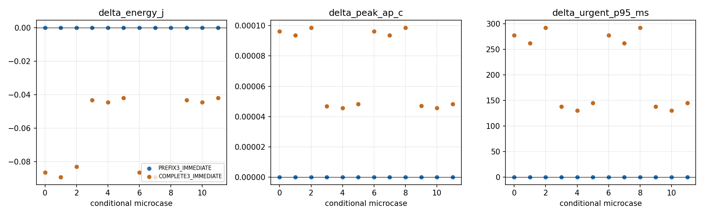
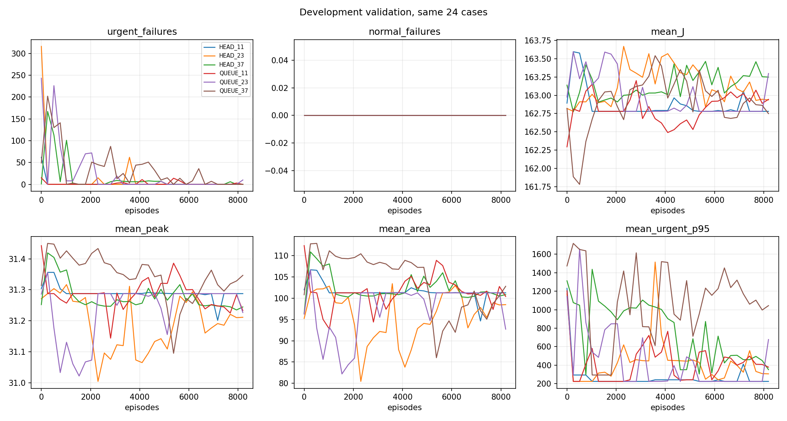
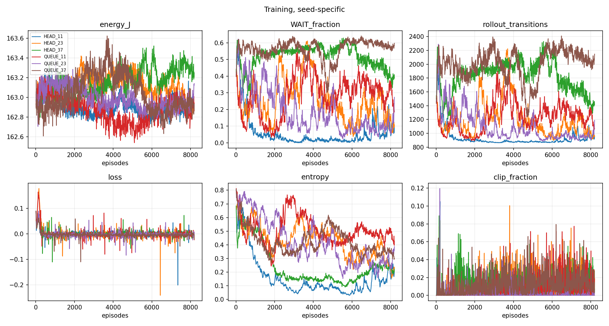
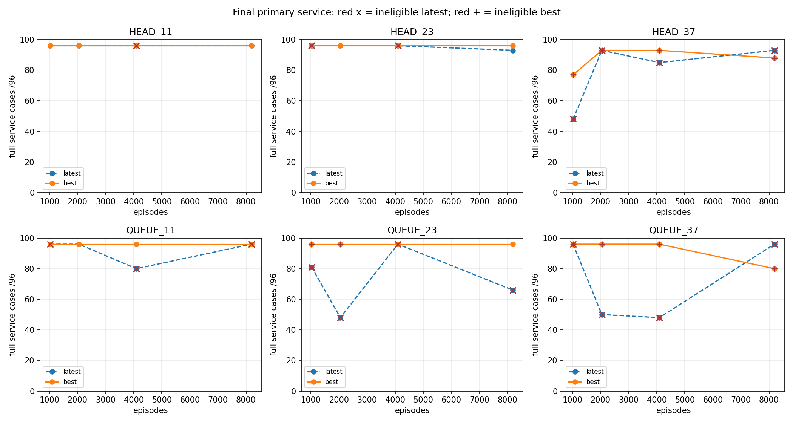
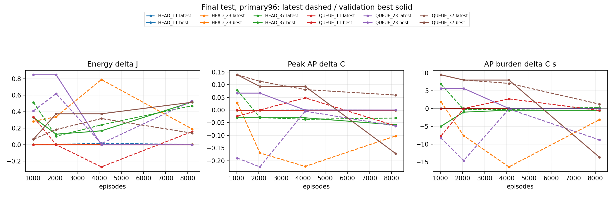

계약·재현 · 한국어 보고서 · 검증 CSV · 최종 CSV · 짝 차이 · 체크포인트
동결 모형의 PC 결과입니다. 기기 명령 0. 기존에 노출된 검증·시험 자료의 대응 비교이며 실기기 절감·새 독립 검증·수렴을 입증하지 않습니다. 미완료/미확인은 0으로 채우지 않습니다.

각 선은 학습 seed 한 개입니다. 아래 곡선으로 연장을 판단하고, 최종 시험으로 checkpoint를 고르지 않았습니다.


점선 latest / 실선 best. 빨간 x는 마지막 정책, 빨간 +는 검증 선택 정책의 개발 검증 부적격 표시입니다. 전체 조건의 비용 차이는 서비스 부적격일 때 진단값입니다.


| 정책 | 검증 적격 | 조건 | 예정/완료 | 실패 긴급/일반 | 전체 서비스 성공% | 완료긴급P95 평균 ms | 전량·기한 조건 | 공동 비악화 조건 | ΔJ | ΔAP최고 °C | Δ면적 °C·s | Δ긴급P95 ms | Δ일반 ms |
|---|
검증 부적격 정책의 공동 비악화 조건은 진단값입니다. 일부 조건의 이득으로 정책 전체를 채택하지 않습니다. 응답P95는 조건별P95 평균이며 pooled P95가 아닙니다.